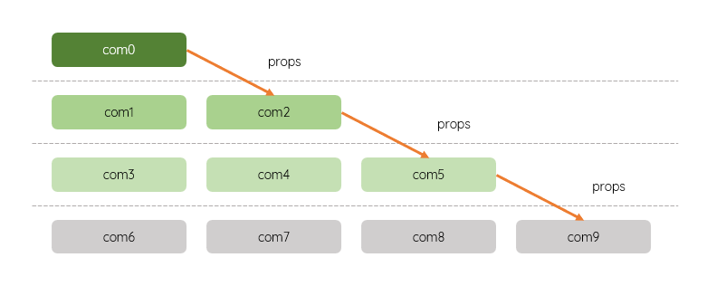

-

传统跨级通信
- 跨级传递 provide vs inject
- 顶级组件 → 底层组件；中间可以经过多层组件
- 采用发布 - 订阅|提供-插入的模式
- 仅允许上向下传递|流转，不允许底层组件向顶级组件传递|反向流转
- 顶层组件引入 provide 包、底层组件引入 inject 包
- 可以传递数据；还可以传递方法；可以使用多个 provide 和 inject；可以传递普通静态数据，也可以传递响应式数据；可以传递简单数据，也可以传递对象
- 响应式数据会保持响应式；传递的是响应式数据，不是响应式数据的值，不要加value
- 只可以在setup顶级作用域使用，不可以在某个事件处理函数中使用：provide() can only be used inside setup()
- 开发调试时，可以使用延时查看响应数据的变化
- 传递数据
- 1. 顶级组件使用 provide 提供数据；其中，响应式数据还采用了双向绑定
-
import {provide, ref} from 'vue'
let name = 'glpla'
let msg = ref('hello')
provide('name', name)
provide('msg', msg)
- 2. 底层组件使用 inject 接收数据
-
import {inject} from 'vue'
let para = inject('name')
let para = inject('msg')
-
<input type="text" v-model="msg">
- 只读 readonly
- 父组件可以限制|保护数据，使得子组件只能访问，不能修改
-
provide('msg', readonly(msg))
- 默认值
- 子组件注入数据时，如果数据不存在或其它异常，可以指定默认值
-
const msg = inject('msg', 'hi, there.')
- 名称冲突
- 顶层组件和底层组件的 provide 方法名称相同，底层组件会覆盖顶层组件的 provide 方法 - 进水楼台先得月
- 应优化设计，避免这种情况
- 传递方法
- 底层组件可以使用顶层组件的方法修改顶层组件的数据；虽然有悖于数据流的单向原则，但是仍然遵循 谁的数据谁修改 的原则，即：用你提供的方法修改你的数据
- 1. 顶级组件使用 provide 提供已经定义好的方法doGreeting
-
const doGreeting = () => {
refDate.value++
}
provide('doGreetingFn', doGreeting)
- 2. 底层组件使用 inject 接收传递的方法，并在事件处理函数fn中实现；fn是普通点击事件
- doGreet接收传递来的方法，要执行，必须使用()
-
let doGreet = inject('doGreetingFn')
//直接执行
doGreet()
//在其它方法中执行
function fn() {
doGreet()
}
- 或直接在结构中使用传递的方法
-
<div @click="doGreet">直接使用</div>
- 全局变量和方法
- 不在入口组件app.vue中定义
- 应在main.js中定义并提供；注意这里直接使用 provide 库，不需要引入
-
import axios from 'axios'
app.provide('axios', axios)
- 组件中使用；需要引入 inject 库
-
import { inject } from 'vue';
const axios = inject('axios')
- 兄弟组件之间的通信 - todo
- 互相定义函数实现 - todo
- 1. 父组件
- 定义接收函数来接收子组件传递的参数并以属性的形式绑定在子组件上
- sendPara是自定义事件
- 父组件 - <script>
-
import Child from '@/components/Child.vue'
import {msg} from 'vue'
let msg = ref('')
function getPara(val){
msg.value = val.value
}
- 父组件 - <template>
-
<div>{{msg}}</div>
<Child :sendPara='getPara'/>
- 2. 子组件
- 定义要发送的数据
- 在props定义发送数据的函数名
- 在事件中定义函数发送数据 - 这里采用点击按钮触发，也可以在生命周期函数中触发
- 子组件 - <script>
-
import {ref} from 'vue'
let para = ref('hi, there.')
defineProps(['sendPara'])
- 子组件 - <template>
-
<button @click='sendPara(para)'>send para</button>